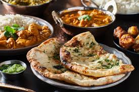

Indian Cuisine
Appetizers
Specials
-
Dosa
South Indian, fermented crepe made from rice batter and black lentils
$10.00 500 cal

-
Paneer and Naan
Indian cheese that's made from curdled milk and some sort of fruit or vegetable acid like lemon juice
$10.00 500 cal
